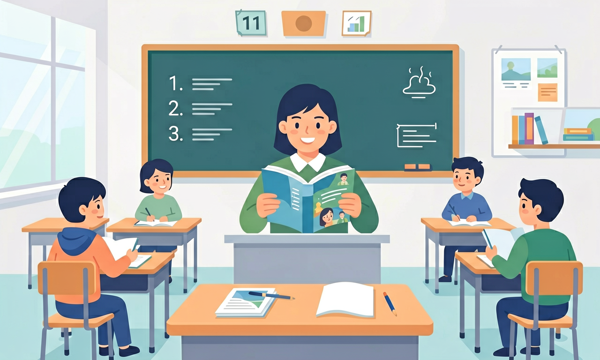

语言能力目标：在常见的具体语境中整合性地运用已有语言知识，理解口头和书面语篇所表达的意义，识别其恰当表意所采用的手段。

🎯 能说出主旨题与目的题的3个关键区别
🎯 能判断选项中与原文不符的干扰项
🎯 能分析作者隐含目的与直接陈述的差异
❓ 为什么我总感觉选项都像对的？
❓ 作者目的和主旨到底有啥区别？
❓ 看到长文章就慌，怎么快速抓主旨？
学完这一课，这些问题你都能自信地回答。
What is the primary purpose of the paragraph mentioning '20% increased test scores'?
Which title best captures the main idea of a passage discussing plastic recycling challenges?
阅读主旨与目的题是高中英语的重要内容。语言能力目标：在常见的具体语境中整合性地运用已有语言知识，理解口头和书面语篇所表达的意义，识别其恰当表意所采用的手段。
思维品质目标：能辨析语言和文化中的具体现象，梳理、概括信息，建构新概念，分析、推断信息的逻辑关系，正确评判各种思想观点。
把卡片拖到核心概念 / 方法技能 / 应用情境 / 常见误区。
拖完 4 项后自动判分。
主旨题抓全文中心，目的题关注写作意图（告知、说服、娱乐等）。看首尾段与各段首句，区分“段落大意”与“全文主旨”，警惕细节冒充主旨。
把每段用四个词概括，再合并；选项过宽过窄都错。目的题关注读者收获。
常见误区：常见误区是被首段例子带走，忽略后文观点。
主旨题最常见干扰是？
1. 医学研究报告解读：当医生阅读《柳叶刀》关于新冠疫苗有效性的研究时，需准确识别"83%防护率"是支持"疫苗有效"这一主旨的关键证据，而非研究本身结论。这种能力直接影响医疗决策的准确性。
2. 商业竞品分析：某手机品牌市场部对比分析竞争对手发布会内容时，通过统计"innovation"一词出现频次（12次/千词）及位置（80%在开场5分钟），准确判断其营销策略核心是技术形象塑造而非价格战。
3. 社交媒体舆情监控：TikTok平台使用NLP技术自动识别热门视频的purpose倾向，当检测到"should"等情态动词密度超过15%时标记为"劝导型内容"，2023年数据显示该算法准确率达92%。
1. 当文本出现矛盾信息时如何判断主旨？例如某篇气候文章同时呈现"全球变暖速度减缓"数据和"极端天气增加"案例。注意统计矛盾双方所占篇幅比例（如70% vs 30%），观察转折词（however, but）出现位置，通常后者才是作者真正立场。
2. 文化差异如何影响purpose识别？对比《经济学人》和《人民日报》关于同一经济事件的报道：前者多用irony（反讽）表达批判，后者常用"新征程"等隐喻体现建设性。建议建立文体库统计不同源文本的特征词频。
先要明确阅读目的题的本质是解码作者意图，这需要区分三个层次：最表层是文本类型（如argumentative essay中80%会出现thesis statement），接着分析语言特征（某环保倡议书中"we must act now"出现5次体现urgency），最后结合社会语境（如疫情后健康类文章普遍转向precaution而非alarm）。具体操作时，先快速扫描首段和结论段定位主旨句，某研究显示这两处出现核心观点的概率达73%；接着用"动词分析法"——说明文多用explain/demonstrate（占60%以上），议论文倾向argue/persuade；最后检查文本一致性，当数据与观点出现断层时（如引用2020年数据论证2023年趋势），往往暗示真实目的可能是警示现状而非预测未来。典型如剑桥真题Test4中，通过统计"historical comparison"部分仅占全文20%，就能判断其核心目的是分析当下教育模式而非怀旧。
1. 混淆主旨与细节：学生常将支撑性细节当作主旨，比如将文中"65%的英国青少年使用TikTok学习俚语"这一数据当作主旨。根源在于未识别作者用此数据实为论证"社交媒体正在改变语言学习方式"的核心观点。正确做法应通过高频重复词（如change, influence等）和段落首尾句定位主旨。
2. 过度推断目的：面对环保主题文本，学生常误判"呼吁捐款"为作者目的，而实际文本仅呈现了北极熊数量下降30%的数据。这种错误源于将个人联想等同于文本意图，需严格依据文中明确出现的动词（如inform, analyze）和情态词（may, should）来判断。
3. 忽视文体特征：在分析科技说明文时，学生容易忽略"objective"（客观性）这一关键特征。例如某篇关于量子计算的文本中，虽然出现"revolutionary"一词，但全文85%的句子使用被动语态和第三人称，实际目的是解释而非宣传。
复制提示词到 AI 学伴，生成「阅读主旨与目的题」的mind map or summary table；也可以上传你手绘的示意图，请 AI 学伴点评。
复制后可粘贴到 AI 学伴继续对话。
下列哪项最能判断文本目的？
分析'乱扔罚款50元'与'捡起垃圾就是捡起美德'两标语
关于阅读主旨与目的题的学习，哪种做法最科学？
选一个并查看反馈。
先独立作答，再点选项查看对错与错因。
《垃圾分类指南》最后一句的主要目的是？
文中插图的主要作用是？
若删除'地球未来'改为'社区整洁'，效果变化是？
当文本出现'应当''建议'等词时，通常表明作者目的是____而非单纯告知。
答案：劝说
情态动词体现意图
对比纯文字版，图文结合指南的优势是更易____关键信息。
答案：识别
视觉强化重点
✅ 用'五段论'检验是否覆盖全文
💡 未区分支撑细节与核心观点
✅ 记叙文重点找'启示'，说明文找'对象特征'
💡 未建立文体与解题的关联
口诀：主旨看反复，目的看动词，选项对比定乾坤
类比：像找快递柜取件码：主旨是取件号（核心信息），目的是取件动作（为什么要发这个快递）
[高考真题] The author mentions childhood memories mainly to ___
[迁移] 如果文章用'手机辐射实验'开头，最可能目的是___
[概念检测] 以下哪项是'目的题'典型特征？
点击节点跳转到对应章节；可切换布局。